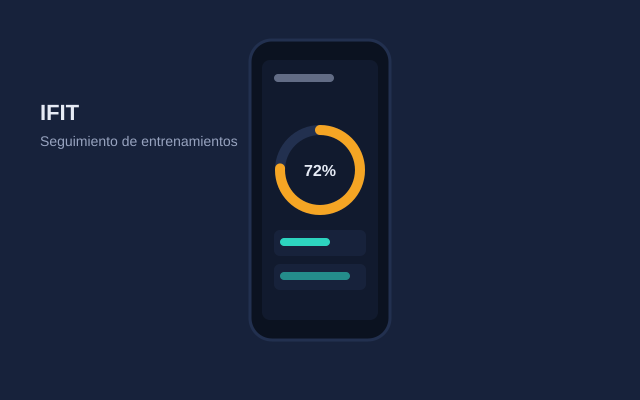

Desarrollo móvil
Aplicación fitness "IFIT" para Android
AndroidSeguimiento de saludDiseño de app
Aplicación móvil para Android orientada al seguimiento de entrenamientos y hábitos físicos, con una interfaz simple pensada para el uso diario.
Enfoque: experiencia de usuario clara y registro de progreso.